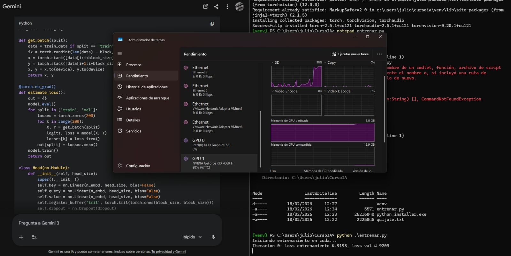
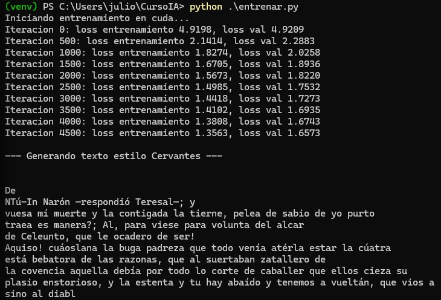
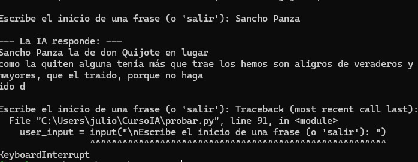

Manual: Pre-entrenamiento de IA en Windows 11
Este manual te guiará en la creación de un "Nano-Modelo" de lenguaje desde cero. A diferencia del fine-tuning, aquí el modelo nace sin saber nada (tabula rasa) y debe aprender las reglas del idioma y del mundo únicamente leyendo el texto de Don Quijote de la Mancha.
1. Flujo de Trabajo
Visualiza el proceso que vamos a ejecutar en tu ordenador:
- Input: El libro en texto plano (`quijote.txt`).
- Proceso: El código Python transforma el texto en números (tokens) y entrena la red neuronal.
- Output: El modelo genera nuevo texto imitando el estilo de Cervantes en la terminal.
 Figura 1: Representación visual del flujo de datos en Windows 11. Desde el archivo de texto original hasta la generación de secuencias nuevas.
Figura 1: Representación visual del flujo de datos en Windows 11. Desde el archivo de texto original hasta la generación de secuencias nuevas.
2. Preparación del Entorno
Necesitamos Python y PyTorch. Asegúrate de marcar "Add Python to PATH" durante la instalación.
# 1. Crear carpeta del proyecto
mkdir CursoIA
cd CursoIA
# 2. Crear entorno virtual
python -m venv venv
.\venv\Scripts\Activate
# 3. Instalar PyTorch
pip install torchDescarga el texto de Don Quijote y guárdalo como quijote.txt en la carpeta. Este archivo será el único "universo" que conocerá nuestra IA.
3. El Código y la Ejecución
Utilizaremos un script llamado entrenar.py que contiene la arquitectura Transformer completa.
Una vez tengas el código guardado, ejecútalo desde la terminal. En este momento, tu PC comenzará a trabajar intensamente.

Figura 2: Configuración del entorno. Observa en el Administrador de Tareas cómo la GPU (NVIDIA RTX 4060 Ti) está al 98% de uso, indicando que el cálculo matricial se está realizando correctamente en el hardware dedicado.Durante el proceso, verás mensajes en la terminal indicando la "Iteración" y el "Loss" (Pérdida/Error). Al principio el error es alto (cerca de 4.9) porque el modelo adivina al azar. Con el tiempo, este número bajará.

Figura 3: Progreso del entrenamiento. El 'loss' baja de 4.9 a 1.35, lo que significa que la IA está aprendiendo. Al final, genera un bloque de texto intentando imitar el castellano antiguo.4. Resultados y Prueba
Al finalizar el entrenamiento, el modelo es capaz de generar texto autónomamente. También podemos interactuar con él dándole un pie de inicio.
Si modificamos el script para permitir entrada de usuario (inferencia), podemos ver cómo el modelo intenta completar frases famosas basándose en lo que ha aprendido del libro.

Figura 4: Prueba de inferencia. Al escribir "Sancho Panza", el modelo completa la frase con vocabulario coherente al contexto de la obra ("don Quijote", "lugar", "verdaderos"), aunque la gramática aún sea primitiva debido al tamaño "nano" del modelo.